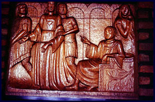
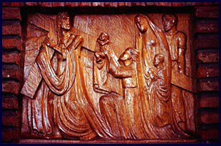
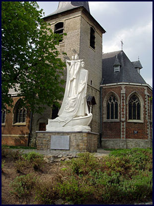
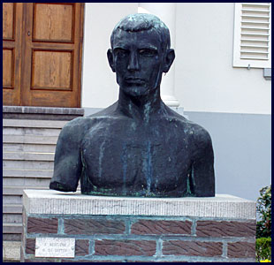
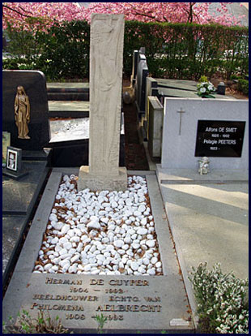
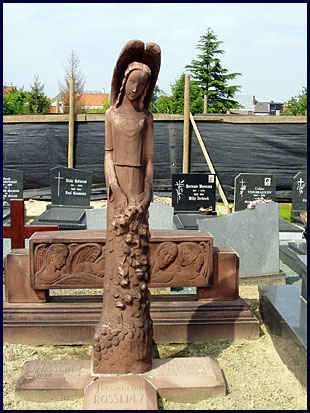
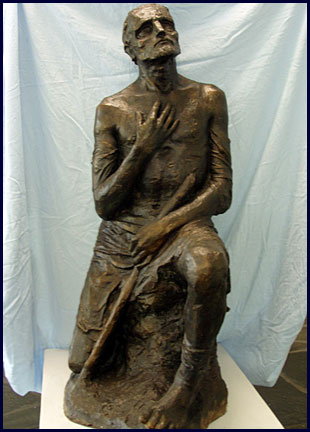

The lion's share of Herman De Cuyper's oeuvre accessible to the public lies in the so-called land of the "Still Waters". The artist is buried under a beech tree on the cemetery of his native Blaasveld, with on his tomb a resurrection statue in Euville stone. He had sculpted this Christ figure for his mother but expressed his desire to keep it for his own tomb.
Blaasveld

Various other gravestones were made during his young age, like the Monument for those killed in action (1928) in front of the Saint-Amandus church. Just past the church in the direction of the centre of neighbouring Willebroek, the bronze torso of De Cuyper's fellow-villager, friend and resistance hero Jan Neutjens (1932) proudly adorns the front lawn of the Bel Air castle.
Being a well-conserved fragment of a male standing nude, it illustrates very well the impressionist way of modelling during the first period of the artist. On the Willebroek cemetery, in 1939 the artist made the Memorial stone for Father Cleymans in Euville stone.
Puurs: memorial stone and Stations of the Cross
However, his most important funerary work is the Memorial stone of the Bosserez family in Puurs. He made this gravestone in 1944 in pink Alsatian sandstone.
During his career, Herman De Cuyper designed various religious cycles in different materials. In 1939 he started work on the fourteen bas-reliefs of the Stations of the Cross for the Saint-Catharina church in Boom (Bosstraat). The oaken panels were integrated into the walls of the nave and illustrate the visionary and even narrative expression power of his religious animism.
He reached the apex of expressiveness with the Open air Stations of the Cross (1942–1944) for the Carolus parish in Ruisbroek (Puurs). These monumental bluestone-chiselled bas-reliefs are standing as "paintings on stands" behind the Lourdes grotto at the Hof ter Zielbeek. In these well thought out compositions all attention goes to the expressive facial expressions.

Kalfort: the Rosary
A similar attitude can also be seen in the most massive religious cycle that he made in 1951 and 1952 for the church garden behind the O.-L.-Vrouw-Ten-Traan church in Kalfort (Puurs). The fifteen groups of the Rosary are chiselled in blocks of Euville stone and shape the five Joyful, Sorrowful and Glorious Mysteries. The figuration is both true-to-nature and styled. Here too, the internalisation and the sublimation of the emotion are concentrated in the metaphysics of the face.
Bornem: war monument
The War monument of Bornem (1934) is also a typical example of a combined monument with a double function: on the one hand the honouring of those who were killed in action (group in bluestone with profane pietà) and a tribute to the H. Heart (bronze Arising Christ).
Mariekerke: Jan Hammenecker monument

Leaving Bornem, at a short distance is Mariekerke a/d Schelde. Here, in 1957, next to and in front of the small O.-L.-Vrouw church, the Jan Hammenecker monument was inaugurated. The monument — made in artificial stone — depicts the priest and Scheldt river poet, standing next to Mary and the infant Jesus in a fishing boat. On the reverse side of the sail, the Vision of the Cross of Saint Lutgardis as sung by Hammenecker is depicted in relief.
In the church, in the south aisle just before the entrance of the chancel, we see an oaken Saint-Job. This statue was made in 1930 and was the first ecclesiastical assignment of the then twenty-six year old artist.
Gallery




